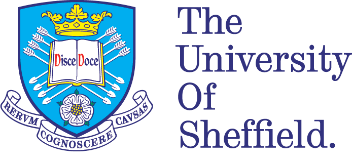

Welcome, friends
Hello.
My name is Adam.
I am from Shah Alam, Malaysia.
I am a Web Designer/Developer.
Education

The University of Sheffield: September 2015 - June 2019
I attended this institution to study Mechanical Engineering as my course. Throughout my four years as an undergraduate, I have developed many technical skills that was required to complete my assigned projects. Other than that, I also have developed various soft skills to have better communication with team members to increase the productivity of our work

Kolej Tuanku Ja'afar: October 2010 - June 2015
I attended this institution to complete my IGCSE and A-Level before attending a higher education institution. Being in a boarding school at the age of 14 has taught me to be very independent. The first skill that I had to develop was being organizationed, and this has helped me to prepare my schedule and taking care of my belongings.

I enjoy my time as a student because I like to learn. Even if the topic is extremely complex, I will always work very hard to be able to attain the knowledge. Other than that, I would also sometimes work hard for a goal that is against all odds. Most o
Curriculum Vitae
Professional-Projects / What I can do
Individual Project: September 2018 - May 2019
I attended this institution to study Mechanical Engineering as my course. Throughout my four years as an undergraduate, I have developed many technical skills that was required to complete my assigned projects. Other than that, I also have developed various soft skills to have better communication with team members to increase the productivity of our work

Group Project Assignment: February 2018 - May 2018
I attended this institution to study Mechanical Engineering as my course. Throughout my four years as an undergraduate, I have developed many technical skills that was required to complete my assigned projects. Other than that, I also have developed various soft skills to have better communication with team members to increase the productivity of our work
Engineering You're Hired: February 2017 - February 2017
I attended this institution to study Mechanical Engineering as my course. Throughout my four years as an undergraduate, I have developed many technical skills that was required to complete my assigned projects. Other than that, I also have developed various soft skills to have better communication with team members to increase the productivity of our work
Global Engineering Challenge: January 2016 - February 2016
I attended this institution to study Mechanical Engineering as my course. Throughout my four years as an undergraduate, I have developed many technical skills that was required to complete my assigned projects. Other than that, I also have developed various soft skills to have better communication with team members to increase the productivity of our work
Proffesional skills
- HTML
- CSS
- JavaScript
- MatLab
- SolidWorks
- ANSYS
- Microsoft Office usage
Personal Project / What I also can do
Sheffield Malaysian Night: April 2017 - March 2018
I attended this institution to study Mechanical Engineering as my course. Throughout my four years as an undergraduate, I have developed many technical skills that was required to complete my assigned projects. Other than that, I also have developed various soft skills to have better communication with team members to increase the productivity of our work
Outward Bound School Lumut: November 2014 - December 2014
I attended this institution to study Mechanical Engineering as my course. Throughout my four years as an undergraduate, I have developed many technical skills that was required to complete my assigned projects. Other than that, I also have developed various soft skills to have better communication with team members to increase the productivity of our work
International Understanding Day Canada: August 2014 - February 2015
I attended this institution to study Mechanical Engineering as my course. Throughout my four years as an undergraduate, I have developed many technical skills that was required to complete my assigned projects. Other than that, I also have developed various soft skills to have better communication with team members to increase the productivity of our work
Volunteering Zoo Negara: February 2014
I attended this institution to study Mechanical Engineering as my course. Throughout my four years as an undergraduate, I have developed many technical skills that was required to complete my assigned projects. Other than that, I also have developed various soft skills to have better communication with team members to increase the productivity of our work
Green Camp Bali: October 2013
I attended this institution to study Mechanical Engineering as my course. Throughout my four years as an undergraduate, I have developed many technical skills that was required to complete my assigned projects. Other than that, I also have developed various soft skills to have better communication with team members to increase the productivity of our work
Personal skills
- Fluent in English and Malay
- Intermediate in Mandarin and Spanish
- Organization
- Communication
- Leadership
- Time-management
Contact
If you want to request a project, please contact me at: